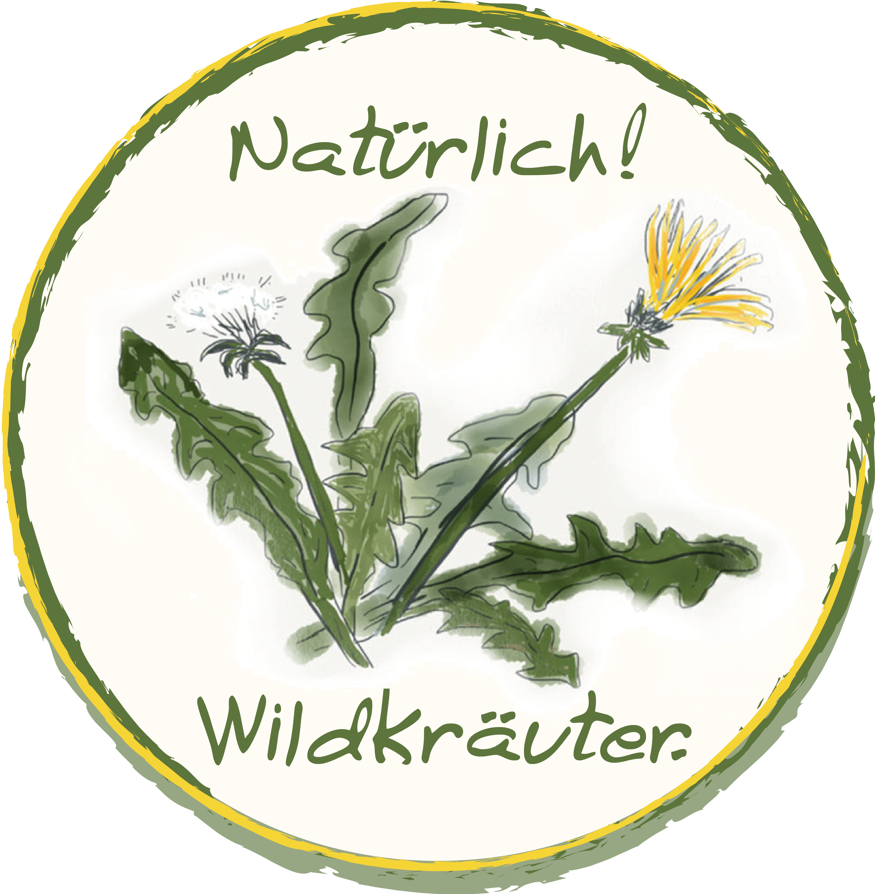

<!DOCTYPE html>
<html lang="de"><head>
	<meta name="generator" content="Hugo 0.68.3" />
    <meta charset="UTF-8">
    <meta name="viewport" content="width=device-width, initial-scale=1.0">
        <meta name="description" content="">

    <title>
            Wildkräuterführung in Middels
    </title>

    
    <link rel="stylesheet" href="/middels.github.io/css/style.css">
    <link rel="stylesheet" href="https://use.typekit.net/vtj4qef.css">
    <link rel="stylesheet" href="https://cdn.rawgit.com/jpswalsh/academicons/master/css/academicons.min.css" crossorigin="anonymous">
    <link rel="stylesheet" href="https://use.fontawesome.com/releases/v5.8.1/css/all.css" integrity="sha384-50oBUHEmvpQ+1lW4y57PTFmhCaXp0ML5d60M1M7uH2+nqUivzIebhndOJK28anvf" crossorigin="anonymous">

    
    <link rel="apple-touch-icon" sizes="180x180" href="/middels.github.io/apple-touch-icon.png">
    <link rel="icon" type="image/png" sizes="32x32" href="/middels.github.io/favicon-32x32.png">
    <link rel="icon" type="image/png" sizes="16x16" href="/middels.github.io/favicon-16x16.png">
    <link rel="manifest" href="/middels.github.io/site.webmanifest">

    
    <link href="/middels.github.io/index.xml" rel="alternate" type="application/rss+xml" title="Wildkräuterführung in Middels" />

    
        
    
</head>
<body>

<main>
    <div class="block introduction">
        <div class="column left">
            
        </div>
        <div class="column right"><h1 style="font-family: 'marydale', sans-serif, -apple-system; font-size: 2rem;">Zeit für Draußen!</h1><h2>Wildkräuterführung in Middels</h2>
            <h3 style="margin-top: -40px;">mit anschließendem Kräuterwaffelessen</h3>
<table>
<tr><td class="pf">Sonntag,</td><td class="pf">30.5.2021</td><td class="pf">11:00</td></tr>
<tr><td class="pf">Samstag,</td><td class="pf">19.6.2021</td><td class="pf">13:30</td></tr>
<tr><td class="pf">Sonntag,</td><td class="pf">25.7.2021</td><td class="pf">11:00</td></tr>
<tr><td class="pf">Samstag,</td><td class="pf">21.8.2021</td><td class="pf">13:30</td></tr>
<tr><td class="pf">Sonntag,</td><td class="pf">19.9.2021</td><td class="pf">11:00</td></tr>
</table>
<p>Am Wegesrand, im Wald und auf der Wiese sind zahlreiche Wildkräuter zu finden. Vielgestaltig, mit bunten Blüten, in tausenderlei Formen und mit intensiven Aromen. 

    Auch in der „Unterschicht“ der Wallhecken sind viele interessante Wildpflanzen heimisch. Gerne möchte ich Sie auf meiner Kräuterführung für diese Wunderwelt begeistern. 
</p><p>    
    Die Führung dauert 1,5 bis 2 Stunden. Zum Abschluss gibt es noch eine Wildkräuterwaffel und ein Getränk im Strohabenteuer Melkhus.
</p><p>    
    Treffpunkt ist das Strohabenteuer Melkhus in der Westerlooger Straße 9, 26607 Aurich
    
</p><p>Für die Führung ist eine Anmeldung vorab erforderlich, siehe unten.   
    Bitte an festes Schuhwerk und wetterfeste Kleidung denken. Bei Sturm oder Starkregen fällt die Führung aus. Hunde können nicht mitkommen.</p>
    <p>20€ für Erwachsene. 12,50€ für Kinder bis 14 Jahre</p>

            <div class="links"><a rel="me" href="https://natuerlich-wildkraeuter.de/contact" title="Anmelden">
                        <span class="fas fa-sign-in-alt"> <span style="font-family: 'marydale', sans-serif, -apple-system; ">Hier anmelden!</span></span>
                    </a></div>
        </div>
    </div></main>

<footer>
    <div class="column"></div>
    <div class="column">
        Datenschutz und Impressum: Siehe <a href="https://natuerlich-wildkraeuter.de" _target="blank">Home Page</a>
    </div>
</footer></body>
</html>
